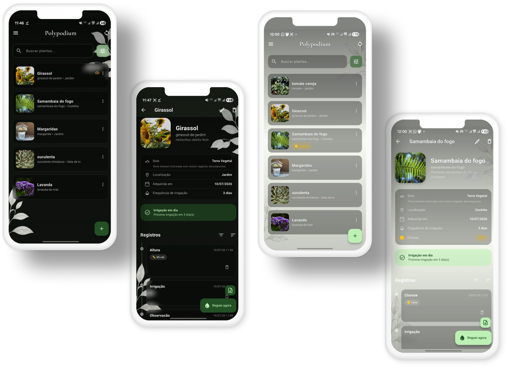

Sua coleção de plantas, cuidada como merece
Polypodium vulgare L.
Cadastre plantas, espécies, solos e localizações; acompanhe o diário de cada planta e receba lembretes de rega — tudo offline, no seu aparelho. Sincronização opcional com um servidor que é seu.
(em breve)
Feito para quem cultiva
Offline-first: funciona sem internet e sem conta. Seus dados ficam com você.
Diário de cada planta
Registros com linha do tempo: regas, podas, adubações, fotos e observações — a história completa de cada planta.
Lembretes de rega
Frequência de irrigação por planta e notificações que sobrevivem até a reinicializações do aparelho.
Base Flora Brasil
Autocomplete de espécies com a base Flora Brasil embutida no app — nomes científicos sem digitação penosa.
Solos e localizações
Catálogo de solos com fotos de referência e localizações com GPS para saber onde cada planta vive.
Sincronização opcional
Workspaces locais e remotos: use 100% offline ou sincronize entre aparelhos com um servidor hospedado por você.
Multiplataforma
Android, Windows e Linux, com temas claro e escuro e a mesma interface delicada em todas as telas.
O app por dentro
Lista de plantas, detalhes e diário — nos temas claro e escuro.

Download
Gratuito. Sem conta, sem anúncios, sem coleta de dados.
Seu servidor, suas regras
O Polypodium não depende de nuvem de terceiros: quem quiser sincronizar entre aparelhos pode subir o próprio servidor com Docker em minutos. Sem servidor, o app continua completo — só que local.